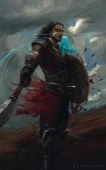

| Parents | Lirin, Hesina |
|---|---|
| Siblings | Tien, Oroden |
| Relatives | Aesudan, Gavinor |
| Born | Late 1153 |
| Abilities | Windrunner, Shardbearer, Cognitive Shadow |
| Bonded With | Sylphrena |
| Titles | Herald of the Almighty, Herald of Kings, Herald of the Wind,Herald of Second Chances, Highmarshal, Captain of the Bridgemen, Son of Tanavast, The Surgeon, The Windrunner, The Captain, The Fallen Soldier, The Reforged Spear, Knight of Wind, Head of the Cobalt Guard (formerly) |
| Aliases | Kaladin Stormblessed, Bridgeboy, Kal, Lordling |
| Profession | Soldier, therapist, bridgeman (formerly), bodyguard (formerly), apprentice surgeon (formerly) |
| Groups | Herald of the Almighty, Knights Radiant (Windrunners), Bridge Four, Kholin army, Amaram's army (formerly), Sadeas army (formerly), Kaladin's squad (formerly), Takers (formerly), Cobalt Guard(formerly), Kholinar Wall Guard (formerly) |
| Birthplace | Hearthstone |
| Residence | Hearthstone (formerly), The Alethi warcamps (formerly), Urithiru |
| Nationality | Alethi |
| Homeworld | Roshar |
| Universe | Cosmere |
| Introduced In | The Way of Kings |

information from The Coppermind